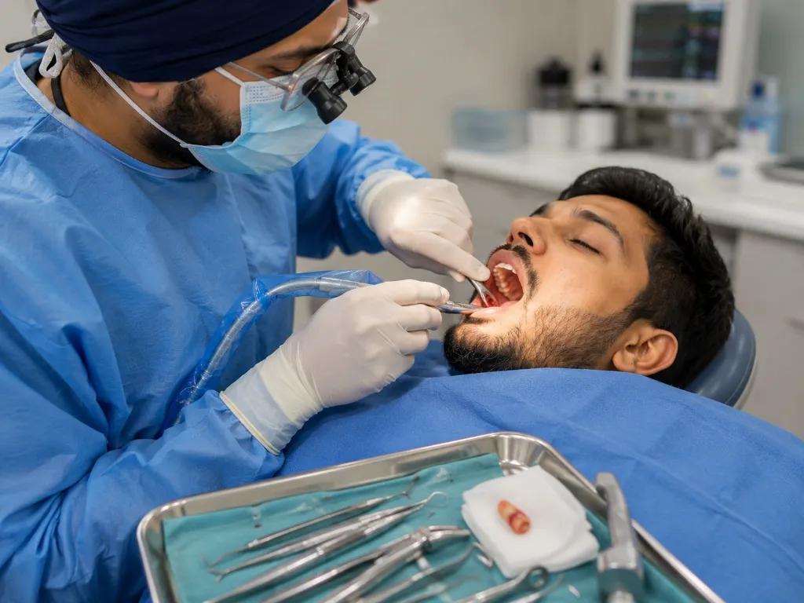
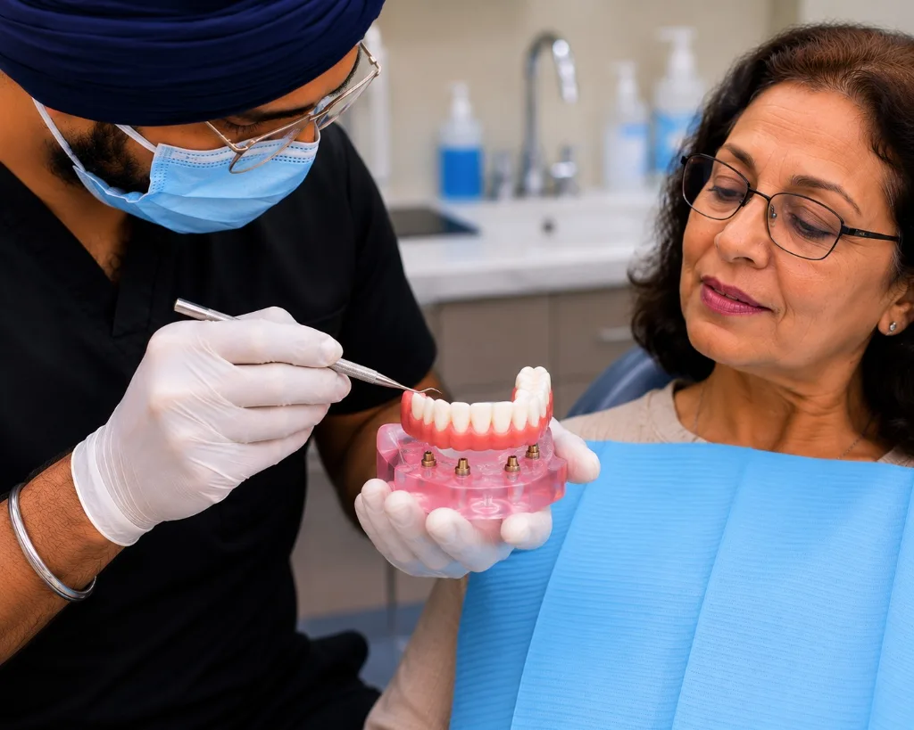

Dental Implants in Ahmedabad

Are you looking for a long-term, fixed solution for missing teeth in Ahmedabad? Dental implants are considered the gold standard in modern dentistry for replacing missing teeth. They provide a natural appearance, restore chewing efficiency, and help maintain jawbone health.
A dental implant is a titanium post that is surgically placed into the jawbone and topped with a custom-made dental crown. Unlike dentures or traditional bridges, implants are fixed, durable, and function just like natural teeth.
Benefits of Dental Implants
- Natural-looking and comfortable
- Permanent replacement for missing teeth
- Improved chewing and speech
- Prevention of jawbone loss
- Long-lasting and highly successful treatment
- No damage to adjacent healthy teeth
Whether you need a single tooth implant, multiple dental implants, or full-mouth dental implants, implant treatment can restore your smile and confidence.
At Dr. Batra's Dental Hub, we provide advanced dental implant treatment in Ahmedabad using modern digital planning and precision-guided techniques to ensure predictable and long-lasting results.
Book your dental implant consultation today and discover why dental implants are the preferred choice for replacing missing teeth.
Who Dental Implants Are For
Implants are considered where one or more teeth are missing, or where a tooth is beyond saving and needs replacing. Common situations we see at our South Bopal clinic:
- A single missing tooth, where you would rather not grind down the healthy teeth either side for a bridge
- Several missing teeth in the same area
- A full arch where dentures have become loose, uncomfortable or difficult to eat with
- A tooth that has fractured below the gumline or failed after previous treatment
- Long-standing gaps where the jawbone has begun to shrink
Why the Jawbone Matters
This is the argument patients are least often told, and it is the one that matters most. A natural tooth root transmits chewing forces into the bone, and that stimulus is what tells the body to maintain the bone. Once the root is gone, the stimulus stops and the body gradually reabsorbs bone it is no longer using.
A bridge or denture sits above the gum and does nothing to prevent this. An implant replaces the root, so it keeps loading the bone. It is the only tooth replacement that does. Read more on why implants are considered the gold standard.
Implant, Bridge or Denture?
| Implant | Bridge | Denture | |
|---|---|---|---|
| Preserves jawbone | Yes | No | No |
| Affects neighbouring teeth | No | They are ground down | No |
| Chewing efficiency | Near-natural | Good | Reduced |
| Cleaning | Brush and floss normally | Thread under the span | Removed to clean |
| Treatment time | 3–6 months | 2–3 weeks | 2–4 weeks |
An implant is not automatically the right answer. If the neighbouring teeth already need crowns for other reasons, a bridge may involve no extra damage and be the more sensible choice. We will tell you that if it applies.

Implant placement is planned digitally before any surgery begins.
The Treatment Process, Step by Step
- Consultation and 3D scan. A cone beam (CBCT) scan shows bone height, width and density, and locates nerves and sinuses. The implant is planned digitally before anything is placed.
- Bone grafting, only if needed. Where bone volume is insufficient, grafting or a sinus lift may be carried out first, which adds healing time.
- Placement. A day-care procedure under local anaesthetic, usually 45–90 minutes for a single implant.
- Osseointegration. Three to six months while bone fuses with the titanium fixture. A temporary tooth can usually be provided for front teeth.
- Restoration. A digital scan or impression, then the custom abutment and crown are fitted.
Are You a Suitable Candidate?
Most adults with a missing tooth and adequate bone are suitable. Implants are generally not appropriate, or need conditions met first, when:
- The jaw is still growing — we wait until skeletal maturity in adolescents
- Diabetes is poorly controlled, which impairs healing (well-controlled diabetes is not a barrier)
- There is untreated gum disease, which must be stabilised first
- You smoke — this measurably increases failure rates and you should know that before investing
- You take certain bone-modifying medications, which needs discussion with your physician
What Affects the Cost
There is no single flat price, because the same missing tooth can need very different treatment depending on what the scan shows. The main variables are the implant system used, whether bone grafting is required, the crown material, and whether the quote covers the fixture, abutment and crown or only part of it.
We assess first and then provide a written plan with costs before any treatment begins. For detail, see our implant cost guide for South Bopal and our explainer on what affects implant pricing.
Recovery and Aftercare
- Soft diet for the first 48 hours; avoid very hot food and drink
- Cold compress on the cheek in 10-minute intervals for any swelling
- Brush gently around the site; do not spit forcefully or probe it
- Take prescribed medication exactly as instructed
- Implants do not decay, but the gum and bone around them can become diseased — daily cleaning and regular check-ups are what make them last
Your Implant Specialist
Implant treatment at our clinic is carried out by Dr Gursimran Singh Batra, BDS, MDS in Prosthodontics & Implantology. Prosthodontics is the three-year postgraduate specialisation specifically concerned with replacing missing teeth, and he also holds a Fellowship in Endodontics. He is a Senior Lecturer and Examiner under Gujarat University.
All surgical work is performed under our Class B vacuum autoclave sterilisation protocol, with instrument pouches opened at the chair.

Dental Implants for South Bopal, Bopal, Shela & Ahmedabad
Our clinic is on the ground floor at B-17/C, Sun South Street, behind Safal Parisar-1 in South Bopal — a few minutes from Bopal, Shela, Ghuma, Shilaj and Ambli, and straightforward to reach from across Ahmedabad via the SP Ring Road. Implant treatment involves several appointments over some months, so proximity genuinely matters.
We are open Monday to Saturday 10:30 AM–8:00 PM and Sunday 10:00 AM–12:00 PM. Book a consultation and we will start with a scan and an honest assessment of whether an implant is your best option.